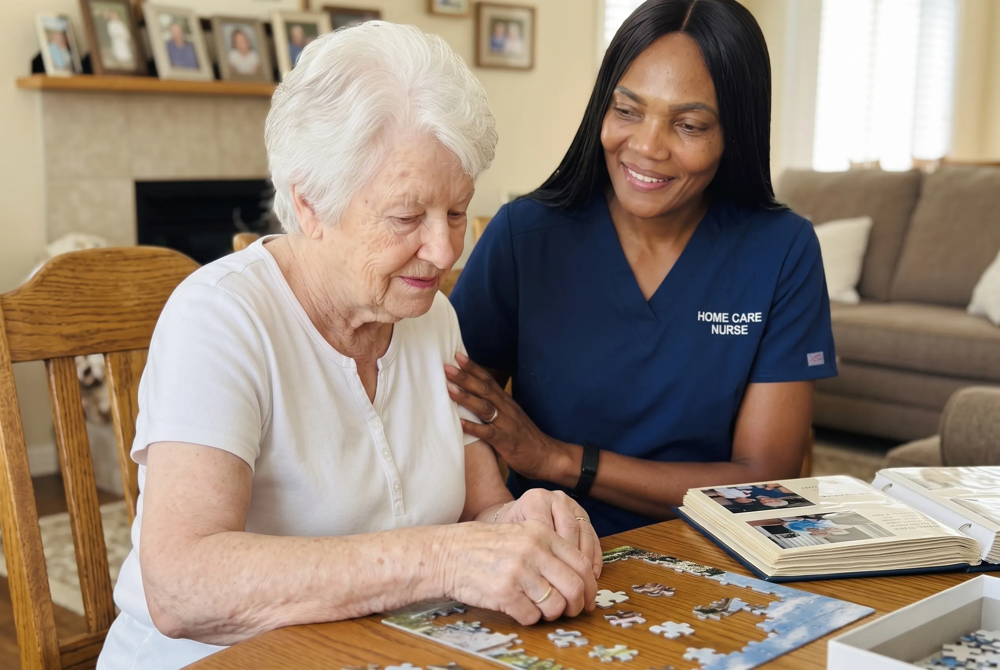

Nurturing the Person Behind the Diagnosis
Alzheimer's disease gradually alters how an individual perceives and interacts with the world, creating moments of confusion, anxiety, and frustration. Familiar surroundings, trusted daily routines, and gentle, consistent caregivers are essential for maintaining emotional stability.
At OnPoint, our Alzheimer's care is guided by Registered Nurse clinical insight and deep empathy. Rather than rotating dozens of unfamiliar faces through your parent’s home, we hand-match a dedicated primary caregiver who understands their life history, favorite music, cultural comfort foods, and unique communication cues.
"We do not treat Alzheimer's as a loss of identity. We celebrate the person they have always been, meeting them with patience, validation, and unwavering dignity."

Supporting Every Phase of the Alzheimer's Journey
Our care plans evolve proactively as cognitive and physical needs change over time.
Early-Stage: Independence & Engagement
Preserving daily autonomy, memory stimulation games, structured walking routines, medication prompt schedules, and companionship on outings.
Mid-Stage: Sundowning & Validation
Gentle de-escalation for afternoon restlessness, sensory calming therapies, secure wandering prevention, and dignified bathing/hygiene assistance.
Overnight Safety & Sleep Oversight
Awake overnight care to guide nighttime bathroom trips, prevent door unlocking, and allow exhausted family caregivers to sleep peacefully.
Late-Stage: High-Acuity Comfort
Gentle mechanical transfers, skin breakdown prevention, soft nutrition assistance, non-verbal connection, and registered nurse palliative oversight.
How Our Alzheimer's Care Protocol Works
A structured, compassionate framework for long-term memory support at home.
Life Story & Cognitive Profile Assessment
Our Lead Registered Nurse conducts a comprehensive assessment of cognitive status, past career achievements, cherished family memories, triggers for distress, and sensory preferences.
- Review of neurological reports and cognitive baseline
- Identification of anxiety triggers and sundowning onset patterns
- Creation of an individual "Life Story" guide for assigned caregivers
Environmental Safety & Wandering Mitigation
We perform a detailed home safety evaluation to secure perimeters, discreetly conceal door locks, install motion-activated pathway lighting, and remove fall risks.
- Discreet door chime and wandering prevention setup
- Bathroom accessibility setup and scald-proof water checks
- Organization of clear visual cues for bedrooms and bathrooms
Caregiver Hand-Matching & Gentle Introduction
We match caregivers whose disposition and temperament naturally put your loved one at ease, beginning with a warm, unhurried introduction.
- Caregivers certified in validation techniques and positive redirection
- Language and cultural alignment for comforting native language conversation
- Small cohort of 1 to 3 primary caregivers to prevent confusion
Ongoing RN Reassessment & Family Coaching
As Alzheimer's progresses, our Registered Nurse reviews the care plan every 30 to 60 days and provides ongoing practical coaching to family members.
- Proactive adjustment of daily shift routines and sensory therapies
- Collaboration with geriatricians and primary care physicians
- Regular family check-ins and respite scheduling
Book an In-Home Alzheimer's Care Consultation
Speak directly with our Lead Registered Nurse about your parent's memory care needs and daily routines.
Questions About Alzheimer's Home Care
In early stages, our care focuses on gentle structure, cognitive engagement, and medication prompts. In middle stages, we introduce validation therapy, wandering prevention, and sensory calming routines for sundowning. In advanced stages, our Registered Nurses and senior aides provide full hands-on transfer assistance, gentle sponge bathing, dysphagia feeding support, and skin integrity preservation.
Our caregivers are trained in dementia de-escalation, gentle validation, and positive redirection. We never argue or confront memory lapses; instead, we join their reality, offer comforting sensory cues (music, tea, familiar photos), and preserve their autonomy and dignity.
Yes. We offer awake overnight care for nighttime wandering, confusion, and bathroom safety, as well as full 24/7 dedicated caregiver teams to support aging in place safely.
Validation therapy focuses on acknowledging and empathizing with the feelings and reality of an individual with dementia, rather than correcting their memory lapses. This drastically reduces anxiety, agitation, and catastrophic emotional reactions.
Our caregivers are trained in dysphagia meal preparation (pureed/soft textures), slow-paced dignified feeding, and creative hydration strategies using infused waters and high-moisture foods.
We implement multi-layered safety measures: discreet perimeter door chimes, motion-activated ambient nightlights, calming bedtime sensory routines, and dedicated awake overnight caregivers.
Yes. Our nurses coordinate with treating physicians and pharmacists for liquid or crushable formulations, and our caregivers use gentle, unhurried routines that overcome anxiety and resistance.
We provide scheduled respite shifts, practical dementia communication coaching from our Lead RN, and direct connections to local Alzheimer Society of BC support groups.
Give Your Loved One Compassionate Alzheimer's Care
Our Lead Registered Nurse is ready to help your family navigate this journey with dignity and peace of mind.